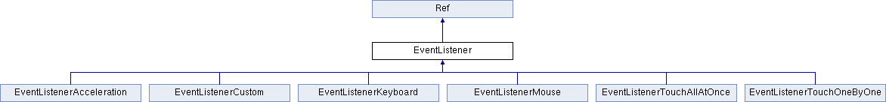

新事件分发机制：在2.x 版本事件处理时，将要触发的事件交给代理（delegate）处理，再通过实现代理里面的onTouchBegan等方法接收事件，最后完成事件的响应。而在新的事件分发机制中，只需通过创建一个事件监听器-用来实现各种触发后的逻辑，然后添加到事件分发器_eventDispatcher，所有事件监听器有这个分发器统一管理，即可完成事件响应。
事件监听器有以下几种：
_eventDispatcher的工作由三部分组成：
监听器实现了各种触发后的逻辑，在适当时候由事件分发器分发事件类型，然后调用相应类型的监听器。
在处理触摸事件时，既可以重写三个方法onTouchBegan,onTouchMoved和onTouchEnded，也可以直接通过Lambda表达式完成响应逻辑。
在2.x版本中，开启多点触摸需要在AppController.mm中的application didFinishLaunchingWithOptions:launchOptions中添加[__glView setMultipleTouchEnabled: YES]，另外还需重载5个相应函数：
而在3.0中，只需创建多点触摸事件监听器，并将其添加到事件分发器中即可。
以下代码在一个界面中添加三个按钮，三个按钮相互遮挡，并且都能触发触摸事件：
// 创建按钮精灵
auto sprite1 = Sprite::create("Images/CyanSquare.png");
sprite1->setPosition(origin+Point(size.width/2, size.height/2) + Point(-80, 80));
addChild(sprite1, 10);
// sprite2
...
// sprite3
...创建好按钮精灵后，创建单点触摸事件监听器，并完成相应逻辑处理
// 创建一个事件监听器类型为 OneByOne 的单点触摸
auto listener1 = EventListenerTouchOneByOne::create();
// 设置是否吞没事件，在 onTouchBegan 方法返回 true 时吞没
listener1->setSwallowTouches(true);
// 使用 lambda 实现 onTouchBegan 事件回调函数
listener1->onTouchBegan = [](http://www.cocos.com/doc/doc/cocos-docs-master/manual/framework/native/v3/event-dispatcher/Touch* touch, Event* event){
// 获取事件所绑定的 target
auto target = static_cast<Sprite*>(event->getCurrentTarget());
// 获取当前点击点所在相对按钮的位置坐标
Point locationInNode = target->convertToNodeSpace(touch->getLocation());
Size s = target->getContentSize();
Rect rect = Rect(0, 0, s.width, s.height);
// 点击范围判断检测
if (rect.containsPoint(locationInNode))
{
log("sprite began... x = %f, y = %f", locationInNode.x, locationInNode.y);
target->setOpacity(180);
return true;
}
return false;
};
// 触摸移动时触发
listener1->onTouchMoved = [](http://www.cocos.com/doc/doc/cocos-docs-master/manual/framework/native/v3/event-dispatcher/Touch* touch, Event* event){...};
// 点击事件结束处理
listener1->onTouchEnded = [=](http://www.cocos.com/doc/doc/cocos-docs-master/manual/framework/native/v3/event-dispatcher/Touch* touch, Event* event){...};最后需要将事件监听器添加到事件分发器
// 添加监听器
_eventDispatcher->addEventListenerWithSceneGraphPriority(listener1, sprite1);
_eventDispatcher->addEventListenerWithSceneGraphPriority(listener1->clone(), sprite2);
_eventDispatcher->addEventListenerWithSceneGraphPriority(listener1->clone(), sprite3);以上代码中_eventDispatcher是Node的属性，通过它管理当前节点（场景、层、精灵等）的所有事件的分发。但它本身是一个单例模式值的引用，在Node的构造函数中，通过Director::getInstance()->getEventDispatcher(); 获取，有了这个属性，就能方便的处理事件。
注意：当再次使用 listener1 的时候，需要使用clone()方法创建一个新的克隆，因为在使用addEventListenerWithSceneGraphPriority或者addEventListenerWithFixedPriority方法时，会对当前使用的事件监听器添加一个已注册的标记，这使得它不能够被添加多次。另外，有一点非常重要，FixedPriority listener添加完之后需要手动remove，而SceneGraphPriority listener是跟Node绑定的，在Node的析构函数中会被移除。具体的示例用法可以参考引擎自带的tests。
我们可以通过以下方法移除一个已经被添加了的监听器。
_eventDispatcher->removeEventListener(listener);
也可以使用如下方法，移除当前事件分发器中所有监听器。
_eventDispatcher->removeAllEventListeners();
当使用removeAll的时候，此节点的所有的监听将被移除，推荐使用 指定删除的方式。removeAll之后菜单也不能响应。因为它也需要接受触摸事件。
键盘响应事件和处理触摸事件使用了相同的处理方式，一下代码演示如何处理键盘响应事件：
// 初始化并绑定
auto listener = EventListenerKeyboard::create();
listener->onKeyPressed = CC_CALLBACK_2(KeyboardTest::onKeyPressed, this);
listener->onKeyReleased = CC_CALLBACK_2(KeyboardTest::onKeyReleased, this);
_eventDispatcher->addEventListenerWithSceneGraphPriority(listener, this);
// 键位响应函数原型
void KeyboardTest::onKeyPressed(EventKeyboard::KeyCode keyCode, Event* event)
{
log("Key with keycode %d pressed", keyCode);
}
void KeyboardTest::onKeyReleased(EventKeyboard::KeyCode keyCode, Event* event)
{
log("Key with keycode %d released", keyCode);
}在 3.0 中多了鼠标捕获事件派发，这可以在不同的平台上，丰富我们游戏的用户体验。
下面代码实现鼠标响应事件的实现步骤：
// 创建监听器
_mouseListener = EventListenerMouse::create();
// 时间响应逻辑
_mouseListener->onMouseMove = [=](http://www.cocos.com/doc/doc/cocos-docs-master/manual/framework/native/v3/event-dispatcher/Event *event){
EventMouse* e = (EventMouse*)event;
string str = "Mouse Down detected, Key: ";
str += tostr(e->getMouseButton());
// ...
};
_mouseListener->onMouseUp = [=](http://www.cocos.com/doc/doc/cocos-docs-master/manual/framework/native/v3/event-dispatcher/Event *event){...};
_mouseListener->onMouseDown = [=](http://www.cocos.com/doc/doc/cocos-docs-master/manual/framework/native/v3/event-dispatcher/Event *event){...};
_mouseListener->onMouseScroll = [=](http://www.cocos.com/doc/doc/cocos-docs-master/manual/framework/native/v3/event-dispatcher/Event *event){...};
// 添加到事件分发器
_eventDispatcher->addEventListenerWithSceneGraphPriority(_mouseListener, this);以上是系统自带的事件类型，事件由系统内部自动触发，如 触摸屏幕，键盘响应等，除此之外，还提供了一种 自定义事件，简而言之，它不是由系统自动触发，而是人为的干涉，如下：
_listener = EventListenerCustom::create("game_custom_event1", [=](http://www.cocos.com/doc/doc/cocos-docs-master/manual/framework/native/v3/event-dispatcher/EventCustom* event){
std::string str("Custom event 1 received, ");
char* buf = static_cast<char*>(event->getUserData());
str += buf;
str += " times";
statusLabel->setString(str.c_str());
});
_eventDispatcher->addEventListenerWithFixedPriority(_listener, 1);以上定义了一个 “自定义事件监听器”，实现了相关逻辑，并且添加到事件分发器。上面的自定义事件将由以下代码触发：
static int count = 0;
++count;
char* buf = new char[10];
sprintf(buf, "%d", count);
EventCustom event("game_custom_event1");
event.setUserData(buf);
if(...)
{
_eventDispatcher->dispatchEvent(&event);
}
CC_SAFE_DELETE_ARRAY(buf);定义一个 EventCustom，并且设置了其 UserData 数据，手动的通过 _eventDispatcher->dispatchEvent(&event); 将此事件分发出去，从而触发之前所实现的逻辑。
除了触摸，移动设备上一个很重要的输入源是设备的方向，因此大多数设备都配备了加速计，用于测量设备静止或匀速运动时所受到的重力方向。
重力感应来自移动设备的加速计，通常支持X,Y和Z三个方向的加速度感应，所以又称为三向加速计。在实际应用中，可以根据3个方向的力度大小来计算手机倾斜的角度或方向。
3.0中，新的事件机制下，我们需要通过创建一个加速计监听器EventListenerAcceleration，其静态create方法中有个Acceleration的参数需要注意。Acceleration是一个类，包含了加速计获得的3个方向的加速度，相关代码如下：
class Acceleration
{
public:
double x;
double y;
double z;
double timestamp;
Acceleration(): x(0), y(0), z(0), timestamp(0) {}
};
该类中每个方向的加速度大小都为一个重力加速度大小。
在使用加速计事件监听器之前，需要先启用此硬件设备：
Device::setAccelerometerEnabled(true);
然后创建对应的监听器，在创建回调函数时，可以使用 lambda 表达式创建匿名函数，也可以绑定已有的函数逻辑实现，如下：
auto listener = EventListenerAcceleration::create([=](http://www.cocos.com/doc/doc/cocos-docs-master/manual/framework/native/v3/event-dispatcher/Acceleration* acc, Event* event){
//逻辑代码段
});
_eventDispatcher->addEventListenerWithSceneGraphPriority(listener, this);